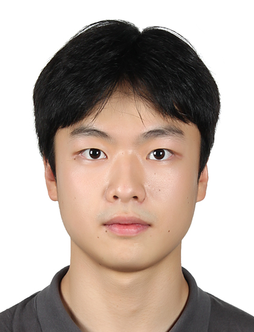

이름 - 서현서.

가족 중 차남. 한동대학교 2학년 재학 중. 현재는 핀란드에서 교환학생으로 공부하고 있음. 평소엔 여러가지에 호기심이 있으며 무엇을 끊기있게 하기보다는 여러가지를 시도해보는 편이다. 태어날때부터 부모님을 따라 자연스럽게 신앙을 갖게 되었고, 현재까지도 교회에 다니며 신앙생활을 하고 있다.
성격의 장점으로는 배려심이 많고 나보다 남을 먼저 생각하는 편이다. 소비적인 일보다는 생산적인 일을 선호하여 시간을 허투로 사용하지 않는다.그러나 단점으로는 남을 먼저 생각하다 보니 스스로를 잘 챙기지 못하며, 낮은 자아존중감을 가지고 있다. 한 번 게을러지면 바닥을 치기 전까지 회복하지 않으며 가끔은 스스로를 꾸미기 위해 거짓말을 하기도 한다.